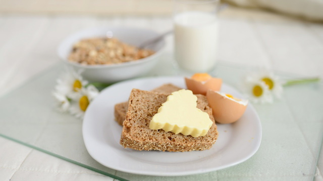

Hjemmekebab i tortillalefser
hjemmebabb for the homies
Ingredienser
🍖 Kjøttfyll
- 1 ts spisskummen
- salt
- pepper
- 1 løk
- 1 fedd hvitløk
- 350g lammekjøtt
🥗 Salat
- 1/4 hode Isbergsalat
- 1/2 rødløk
- 1/4 agurk
- 1 tomat
- 1 liten boks (160g) mais
🥙 Medium sterk
- 6 store tortillalefser
- kebabsaus mild
- kebabsaus sterk
Fremgangsmåte
- Krydre kjøttet med salt, pepper og spisskummen.
- Skjær løk i tynne skiver, og press hvitløk.
- Fres løk og hvitløk i en panne til løken er blank og gyllen.
- Skjær opp isbergsalat, rødløk, agurk og tomat.
- Hell vann av maisen.
- Tilsett lammekjøttet og stek blandingen til kjøttet er gjennomstekt.
- Varm lefsene.
- Smør lefsene med mild kebabsaus.
- Fyll med kjøttfyll og salat.
- Topp med ønsket mengde sterk saus.
- Brett sammen lefse og spis.
Notes
Add any tips, nuances or acknowledgements here.